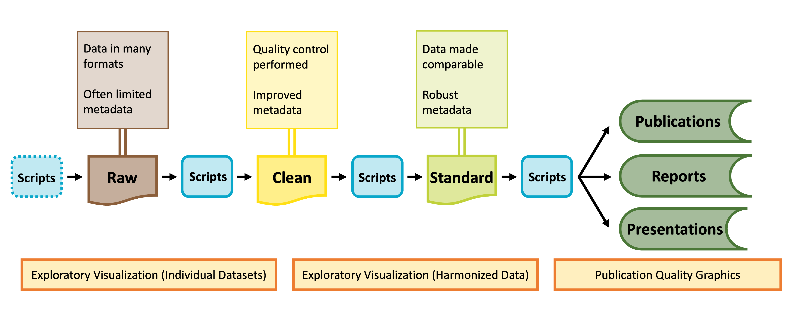
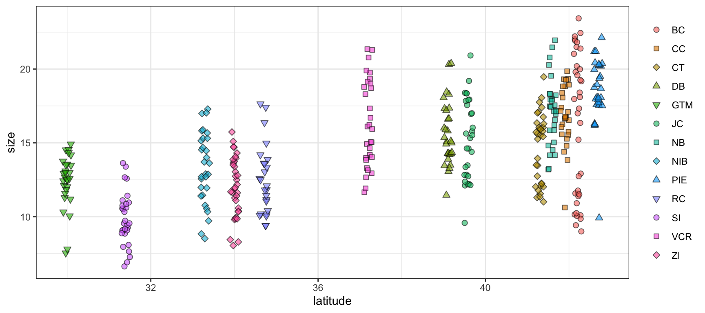
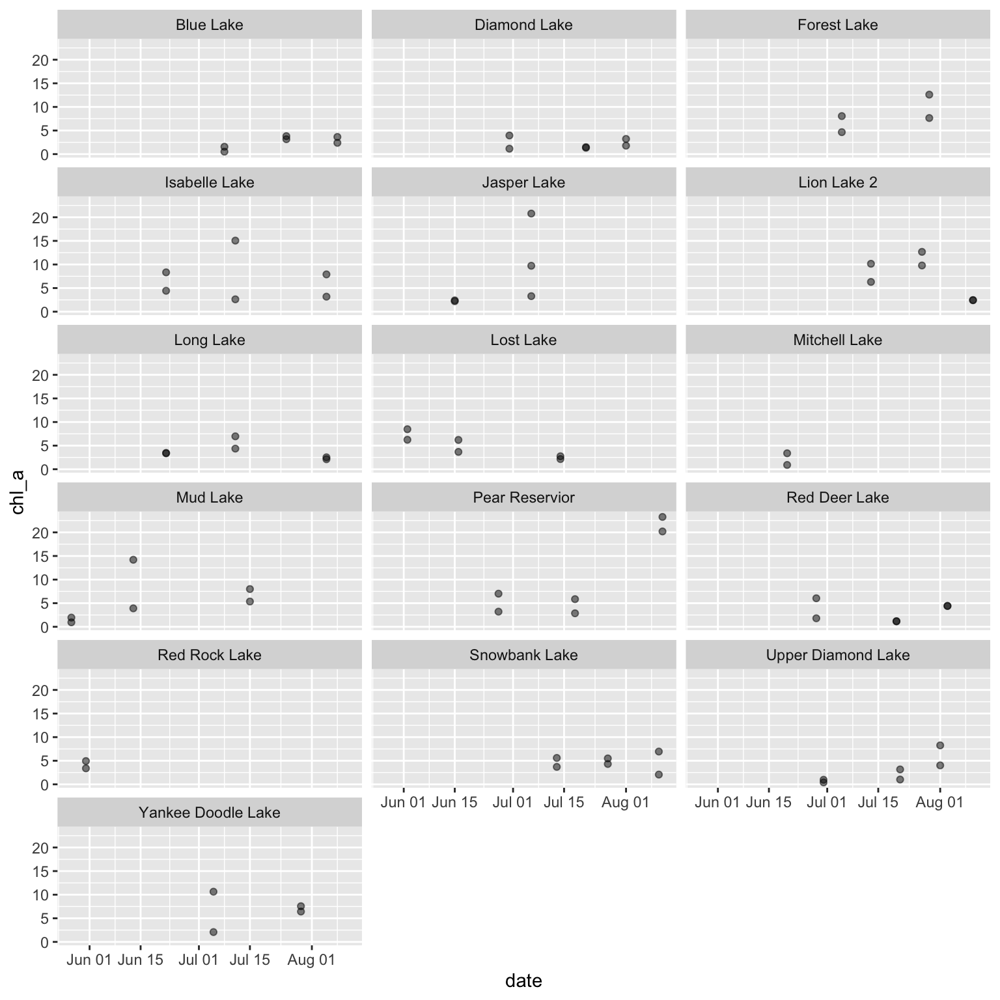
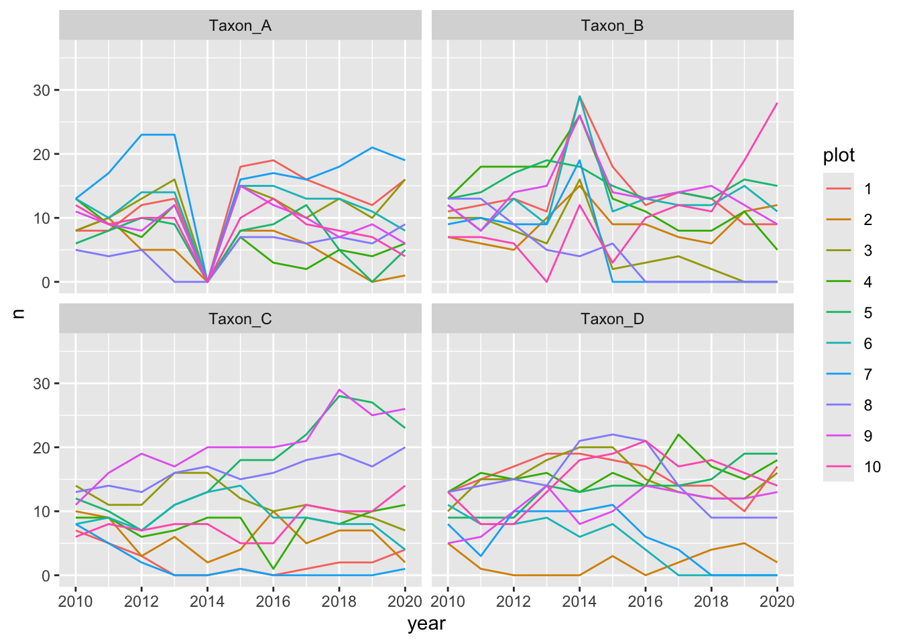
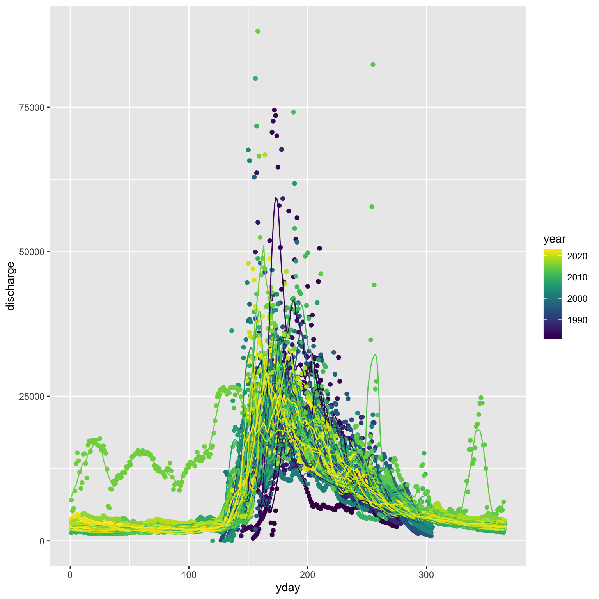

install.packages("librarian")
librarian::shelf(tidyverse, summarytools, datacleanr, lterdatasampler, supportR, cowplot)Data Visualization & Exploration
Overview
Data visualization is a fundamental part of working with data. Visualization can be only used in the final stages of a project to make figures for publication but it can also be hugely valuable for quality control and hypothesis development processes. This module focuses on the fundamentals of graph creation in an effort to empower you to apply those methods in the various contexts where you might find visualization to be helpful.
Learning Objectives
After completing this module you will be able to:
- Explain how data visualization can be used to explore data
- Define fundamental
ggplot2vocabulary - Identify appropriate graph types for given data type/distribution
- Discuss differences between presentation- and publication-quality graphs
- Explain how your graphs can be made more accessible
Preparation
- Each Synthesis fellow should download one data file identified for your group’s project
- If you are a Mac user, install XQuartz
- If you are an R user, run the following code:
Networking Session
We’ll have two guests to kick off today’s class. Each has been involved in synthesis as an early career researcher and each uses visualization in different ways to assess, clarify, and communicate their data and analyses.
- Tim Ohlert, Postdoctoral Researcher, Colorado State University; DroughtNet Coordinator
- Kyle Cavanaugh, Associate Professor, UCLA Institute of the Environment and Sustainability and the UCLA Geography Department
Data Visualization & The Synthesis Workflow
As shown in the graphic below, visualization can be valuable throughout the lifecycle of a synthesis project, albeit in different ways at different phases of a project.

Visualization for Exploration
Exploratory data visualization is an important part of any scientific project. Before launching into analysis it is valuable to make some simple plots to scan the contents. These plots may reveal any number of issues, such as typos, sensor calibration problems or differences in the protocol over time.
These “fitness for use” visualizations are even more critical for synthesis projects. In synthesis, we are often repurposing publicly available datasets to answer questions that differ from the original motivations for data collection. As a result, the metadata included with a published dataset may be insufficient to assess whether the data are useful for your group’s question. Datasets may not have been carefully quality-controlled prior to publication and could include any number of ‘warts’ that can complicate analyses or bias results. Some of these idiosyncrasies you may be able to anticipate in advance (e.g. spelling errors in taxonomy) and we encourage you to explicitly test for those and rectify them during the data harmonization process (see the Data Wrangling module). Others may come as a surprise.
During the early stages of a synthesis project, you will want to gain skill to quickly scan through large volumes of data. The figures you make will typically be for internal use only, and therefore have low emphasis on aesthetics.
Exploratory Visualization Applications
Specific applications of exploratory data visualization include identifying:
- Dataset coverage (temporal, spatial, taxonomic)
- For example, the metadata might indicate a dataset covers the period 2010-2020. That could mean one data point in 2010 and one in 2020! This may not be useful for a time-series analysis.
- Errors in metadata
- Do the units “make sense” with the figure? Typos in metadata do occur, so if you find yourself with elephants weighing only a few grams, it may be necessary to reach out to the dataset contact.
- Differences in methodology
- Do the data from sequential years, replicate sites, different providers generally fall into the same ranges or is there sensor drift or changes in protocols that need to be addressed?
- A risk of synthesis projects is that you may find you are comparing apples to oranges across datasets, as the individual datasets included in your project were likely not collected in a coordinated fashion.
- A benefit of synthesis projects is you will typically have large volumes of data, collected from many locations or timepoints. This data volume can be leveraged to give you a good idea of how your response variable looks at a ‘typical’ location as well as inform your gestalt sense of how much site-to-site, study-to-study, or year-to-year variability is expected. In our experience, where one particular dataset, or time period, strongly differs from the others, the most common root cause is differences in methodology that need to be addressed in the data harmonization process.
In the data exploration stage you may find:
- Harmonization issues
- Are all your datasets measured in units that can be converted to the same units?
- If not, can you envision metrics (relative abundance? Effect size?) that would make datasets intercomparable?
- Some entire datasets cannot be used
- Parts of some datasets cannot be used
- Additional quality control is needed (e.g. filtering large outliers)
These steps are an important precursor to the data harmonization stage, where you will process the datasets you have selected into an analysis-ready format.
Graphing with ggplot2
You may already be familiar with the ggplot2 package in R but if you are not, it is a popular graphing library based on The Grammar of Graphics. Every ggplot is composed of four elements:
- A ‘core’
ggplotfunction call - Aesthetics
- Geometries
- Theme
Note that the theme component may be implicit in some graphs because there is a suite of default theme elements that applies unless otherwise specified.
This module will use example data to demonstrate these tools but as we work through these topics you should feel free to substitute a dataset of your choosing! If you don’t have one in mind, you can use the example dataset shown in the code chunks throughout this module. This dataset comes from the lterdatasampler R package and the data are about fiddler crabs (Minuca pugnax) at the Plum Island Ecosystems (PIE) LTER site.
# Load needed libraries
library(tidyverse); library(lterdatasampler)
# Load the fiddler crab dataset
data(pie_crab)
# Check its structure
str(pie_crab)tibble [392 × 9] (S3: tbl_df/tbl/data.frame)
$ date : Date[1:392], format: "2016-07-24" "2016-07-24" ...
$ latitude : num [1:392] 30 30 30 30 30 30 30 30 30 30 ...
$ site : chr [1:392] "GTM" "GTM" "GTM" "GTM" ...
$ size : num [1:392] 12.4 14.2 14.5 12.9 12.4 ...
$ air_temp : num [1:392] 21.8 21.8 21.8 21.8 21.8 ...
$ air_temp_sd : num [1:392] 6.39 6.39 6.39 6.39 6.39 ...
$ water_temp : num [1:392] 24.5 24.5 24.5 24.5 24.5 ...
$ water_temp_sd: num [1:392] 6.12 6.12 6.12 6.12 6.12 ...
$ name : chr [1:392] "Guana Tolomoto Matanzas NERR" "Guana Tolomoto Matanzas NERR" "Guana Tolomoto Matanzas NERR" "Guana Tolomoto Matanzas NERR" ...With this dataset in hand, let’s make a series of increasingly customized graphs to demonstrate some of the tools in ggplot2.
Let’s begin with a scatterplot of crab size on the Y-axis with latitude on the X. We’ll forgo doing anything to the theme elements at this point to focus on the other three elements.
ggplot(data = pie_crab, mapping = aes(x = latitude, y = size, fill = site)) +
geom_point(pch = 21, size = 2, alpha = 0.5)- 1
- We’re defining both the data and the X/Y aesthetics in this top-level bit of the plot. Also, note that each line ends with a plus sign
- 2
-
Because we defined the data and aesthetics in the
ggplot()function call above, this geometry can assume those mappings without re-specificying
We can improve on this graph by tweaking theme elements to make it use fewer of the default settings.
ggplot(data = pie_crab, mapping = aes(x = latitude, y = size, fill = site)) +
geom_point(pch = 21, size = 2, alpha = 0.5) +
theme(legend.title = element_blank(),
panel.background = element_blank(),
axis.line = element_line(color = "black"))- 1
-
All theme elements require these
element_...helper functions.element_blankremoves theme elements but otherwise you’ll need to use the helper function that corresponds to the type of theme element (e.g.,element_textfor theme elements affecting graph text)
We can further modify ggplot2 graphs by adding multiple geometries if you find it valuable to do so. Note however that geometry order matters! Geometries added later will be “in front of” those added earlier. Also, adding too much data to a plot will begin to make it difficult for others to understand the central take-away of the graph so you may want to be careful about the level of information density in each graph. Let’s add boxplots behind the points to characterize the distribution of points more quantitatively.
ggplot(data = pie_crab, mapping = aes(x = latitude, y = size, fill = site)) +
geom_boxplot(pch = 21) +
geom_point(pch = 21, size = 2, alpha = 0.5) +
theme(legend.title = element_blank(),
panel.background = element_blank(),
axis.line = element_line(color = "black"))- 1
- By putting the boxplot geometry first we ensure that it doesn’t cover up the points that overlap with the ‘box’ part of each boxplot
ggplot2 also supports adding more than one data object to the same graph! While this module doesn’t cover map creation, maps are a common example of a graph with more than one data object. Another common use would be to include both the full dataset and some summarized facet of it in the same plot.
Let’s calculate some summary statistics of crab size to include that in our plot.
# Load the supportR library
library(supportR)
# Summarize crab size within latitude groups
crab_summary <- supportR::summary_table(data = pie_crab, groups = c("site", "latitude"),
response = "size", drop_na = TRUE)
# Check the structure
str(crab_summary)'data.frame': 13 obs. of 6 variables:
$ site : chr "BC" "CC" "CT" "DB" ...
$ latitude : num 42.2 41.9 41.3 39.1 30 39.6 41.6 33.3 42.7 34.7 ...
$ mean : num 16.2 16.8 14.7 15.6 12.4 ...
$ std_dev : num 4.81 2.05 2.36 2.12 1.8 2.72 2.29 2.42 2.3 2.34 ...
$ sample_size: int 37 27 33 30 28 30 29 30 28 25 ...
$ std_error : num 0.79 0.39 0.41 0.39 0.34 0.5 0.43 0.44 0.43 0.47 ...With this data object in-hand, we can make a graph that includes both this and the original, unsummarized crab data. To better focus on the ‘multiple data objects’ bit of this example we’ll pare down on the actual graph code.
ggplot() +
geom_point(pie_crab, mapping = aes(x = latitude, y = size, fill = site),
pch = 21, size = 2, alpha = 0.2) +
geom_errorbar(crab_summary, mapping = aes(x = latitude,
ymax = mean + std_error,
ymin = mean - std_error),
width = 0.2) +
geom_point(crab_summary, mapping = aes(x = latitude, y = mean, fill = site),
pch = 23, size = 3) +
theme(legend.title = element_blank(),
panel.background = element_blank(),
axis.line = element_line(color = "black"))- 1
-
If you want multiple data objects in the same
ggplot2graph you need to leave this top levelggplot()call empty! Otherwise you’ll get weird errors with aesthetics later in the graph - 2
- This geometry adds the error bars and it’s important that we add it before the summarized data points themselves if we want the error bars to be ‘behind’ their respective points
Streamlining Graph Aesthetics
Synthesis projects often generate an entire network of inter-related papers. Ensuring that all graphs across papers from a given team have a similar “feel” is a nice way of implying a certain standard of robustness for all of your group’s projects. However, copy/pasting the theme elements of your graphs can (A) be cumbersome to do even once and (B) needs to be re-done every time you make a change anywhere. Fortunately, there is a better way!
ggplot2 supports adding theme elements to an object that can then be reused as needed elsewhere. This is the same theory behind wrapping repeated operations into custom functions.
# Define core theme elements
theme_synthesis <- theme(legend.position = "none",
panel.background = element_blank(),
axis.line = element_line(color = "black"),
axis.text = element_text(size = 13))
# Create a graph
ggplot(pie_crab, aes(y = water_temp, x = air_temp, color = size, size = size)) +
geom_point() +
theme_synthesis +
theme(legend.position = "right")- 1
-
This theme element controls the text on the tick marks.
axis.titlecontrols the text in the labels of the axes - 2
-
As a bonus, subsequent uses of
theme()will replace defaults defined in your earlier theme object. So, you can design a set of theme elements that are usually appropriate and then easily change just some of them as needed
Multi-Panel Graphs
It is sometimes the case that you want to make a single graph file that has multiple panels. For many of us, we might default to creating the separate graphs that we want, exporting them, and then using software like Microsoft PowerPoint to stitch those panels into the single image we had in mind from the start. However, as all of us who have used this method know, this is hugely cumbersome when your advisor/committee/reviewers ask for edits and you now have to redo all of the manual work behind your multi-panel graph.
Fortunately, there are two nice entirely scripted alternatives that you might consider: Faceted graphs and Plot grids. See below for more information on both.
In a faceted graph, every panel of the graph has the same aesthetics. These are often used when you want to show the relationship between two (or more) variables but separated by some other variable. In synthesis work, you might show the relationship between your core response and explanatory variables but facet by the original study. This would leave you with one panel per study where each would show the relationship only at that particular study.
Let’s check out an example.
ggplot(pie_crab, aes(x = date, y = size, color = site))+
geom_point(size = 2) +
facet_wrap(. ~ site) +
theme_bw() +
theme(legend.position = "none")- 1
-
This is a
ggplot2function that assumes you want panels laid out in a regular grid. There are otherfacet_...alternatives that let you specify row versus column arrangement. You could also facet by multiple variables by putting something to the left of the tilde - 2
- We can remove the legend because the site names are in the facet titles in the gray boxes
In a plot grid, each panel is completely independent of all others. These are often used in publications where you want to highlight several different relationships that have some thematic connection. In synthesis work, your hypotheses may be more complicated than in primary research and such a plot grid would then be necessary to put all visual evidence for a hypothesis in the same location. On a practical note, plot grids are also a common way of circumventing figure number limits enforced by journals.
Let’s check out an example that relies on the cowplot library.
# Load a needed library
library(cowplot)
# Create the first graph
crab_p1 <- ggplot(pie_crab, aes(x = site, y = size, fill = site)) +
geom_violin() +
coord_flip() +
theme_bw() +
theme(legend.position = "none")
# Create the second
crab_p2 <- ggplot(pie_crab, aes(x = air_temp, y = water_temp)) +
geom_errorbar(aes(ymax = water_temp + water_temp_sd, ymin = water_temp - water_temp_sd),
width = 0.1) +
geom_errorbarh(aes(xmax = air_temp + air_temp_sd, xmin = air_temp - air_temp_sd),
width = 0.1) +
geom_point(aes(fill = site), pch = 23, size = 3) +
theme_bw()
# Assemble into a plot grid
cowplot::plot_grid(crab_p1, crab_p2, labels = "AUTO", nrow = 1)- 1
- Note that we’re assigning these graphs to objects!
- 2
- This is a handy function for flipping X and Y axes without re-mapping the aesthetics
- 3
- This geometry is responsible for horizontal error bars (note the “h” at the end of the function name)
- 4
-
The
labels = "AUTO"argument means that each panel of the plot grid gets the next sequential capital letter. You could also substitute that for a vector with labels of your choosing
Accessibility Considerations
After you’ve made the graphs you need, it is good practice to revisit them with to ensure that they are as accessible as possible. You can of course also do this during the graph construction process but it is sometimes less onerous to tackle as a penultimate step in the figure creation process. There are many facets to accessibility and we’ve tried to cover just a few of them below.
Color Choice
One of the more well-known facets of accessibility in data visualization is choosing colors that are “colorblind safe”. Such palettes still create distinctive colors for those with various forms of color blindness (e.g., deuteranomoly, protanomaly, etc.). The classic red-green heatmap for instance is very colorblind unsafe in that people with some forms of colorblindness cannot distinguish between those colors (hence the rise of the yellow-blue heatmap in recent years). Unforunately, the ggplot2 default rainbow palette–while nice for exploratory purposes–is not colorlbind sfae.
Some websites (such as colorbewer2.org) include a simple checkbox for colorblindness safety which automatically limits the listed options to those that are colorblind safe. Alternately, you could use a browser plug-in (such as Let’s get color blind on Google Chrome) to simulate colorblindness on a particular page.
One extreme approach you could take is to dodge this issue entirely and format your graphs such that color either isn’t used at all or only conveys information that is also conveyed in another graph aesthetic. We don’t necessarily recommend this as color–when the palette is chosen correctly–can be a really nice way of making information-dense graphs more informative and easily-navigable by viewers.
Multiple Modalities
Related to the color conversation is the value of mapping multiple aesthetics to the same variable. By presenting information in multiple ways–even if that seems redundant–you enable a wider audience to gain an intuitive sense of what you’re trying to display.
ggplot(data = pie_crab, mapping = aes(x = latitude, y = size,
fill = site, shape = site)) +
geom_jitter(size = 2, width = 0.1, alpha = 0.6) +
scale_shape_manual(values = c(21:25, 21:25, 21:23)) +
theme_bw() +
theme(legend.title = element_blank())- 1
- In this graph we’re mapping both the fill and shape aesthetics to site
- 2
-
This is a little cumbersome but there are only five ‘fill-able’ shapes in R so we need to reuse some of them to have a unique one for each site. Using fill-able shapes is nice because you get a crisp black border around each point. See
?pchfor all available shapes

In the above graph, even though the rainbow palette is not ideal for reasons mentioned earlier, it is now much easier to tell the difference between sites with similar colors. For instance, “NB”, “NIB”, and “PIE” are all shades of light blue/teal. Now that they have unique shapes it is dramatically easier to look at the graph and identify which points correspond to which site.
Presentation vs. Publication
One final element of accessibility to consider is the difference between a ‘presentation-quality’ graph and a ‘publication-quality’ one. While it may be tempting to create a single version of a given graph and use it in both contexts that is likely to be less effective in helping you to get your point across than making small tweaks to two separate versions of what is otherwise the same graph.
Do:
- Increase size of text/points greatly
- If possible, sit in the back row of the room where you’ll present and look at your graphs from there
- Consider adding graph elements that highlight certain graph regions
- Present summarized data (increases focus on big-picture trends and avoids discussion of minutiae)
- Map multiple aesthetics to the same variables
Don’t:
- Use technical language / jargon
- Include unnecessary background elements
- Use multi-panel graphs (either faceted or plot grid)
- If you have multiple graph panels, put each on its own slide!
ggplot(crab_summary, aes(x = latitude, y = mean,
shape = reorder(site, latitude),
fill = reorder(site, latitude))) +
geom_vline(xintercept = 36.5, color = "black", linetype = 1) +
geom_vline(xintercept = 41.5, color = "black", linetype = 2) +
geom_errorbar(mapping = aes(ymax = mean + std_error, ymin = mean - std_error),
width = 0.2) +
geom_point(size = 4) +
scale_shape_manual(values = c(21:25, 21:25, 21:23)) +
labs(x = "Latitude", y = "Mean Crab Size (mm)") +
theme(legend.title = element_blank(),
axis.line = element_line(color = "black"),
panel.background = element_blank(),
axis.title = element_text(size = 17),
axis.text = element_text(size = 15))- 1
-
We can use the
reorderfunction to make the order of sites in the legend (from top to bottom) match the order of sites in the graph (from left to right) - 2
- Adding vertical lines at particular parts in the graph can make comparisons within the same graph easier
- 3
-
labslets us customize the title and label text of a graph
Do:
- Increase size of text/points slightly
- You want to be legible but you can more safely assume that many readers will be able to increase the zoom of their browser window if needed
- Present un-summarized data (with or without summarized points included)
- Many reviewers will want to get a sense for the “real” data so you should include unsummarized values wherever possible
- Use multi-panel graphs
- If multiple graphs “tell a story” together, then they should be included in the same file!
- Map multiple aesthetics to the same variables
- If publishing in a journal available in print, check to make sure your graph still makes sense in grayscale
- There are nice browser plug-ins (like Grayscale the Web for Google Chrome) for this too
Don’t:
- Include unnecessary background elements
- Add graph elements that highlight certain graph regions
- You can–and should–lean more heavily on the text of your publication to discuss particular areas of a graph
ggplot() +
geom_point(pie_crab, mapping = aes(x = latitude, y = size,
color = reorder(site, latitude)),
pch = 19, size = 1, alpha = 0.3) +
geom_errorbar(crab_summary, mapping = aes(x = latitude, y = mean,
ymax = mean + std_error,
ymin = mean - std_error),
width = 0.2) +
geom_point(crab_summary, mapping = aes(x = latitude, y = mean,
shape = reorder(site, latitude),
fill = reorder(site, latitude)),
size = 4) +
scale_shape_manual(values = c(21:25, 21:25, 21:23)) +
labs(x = "Latitude", y = "Mean Crab Carapace Width (mm)") +
theme(legend.title = element_blank(),
axis.line = element_line(color = "black"),
panel.background = element_blank(),
axis.title = element_text(size = 15),
axis.text = element_text(size = 13))- 1
- Here we are using a reasonable amount of technical language
Some other factors you might consider regardless of where the graphs will be embedded include:
- White Background. Ensure figures have a plain, white background for clarity and compatibility with journal formats.
- High Resolution. Use a resolution of at least 300 dpi for print quality. Journals often specify the minimum dpi required.
- Bounding Box and Borders. Add a bounding box or border if it enhances clarity, but avoid excessive framing unless necessary to separate elements clearly.
- Clear Axis Labels. Label axes with clear, concise descriptions, including units of measurement (e.g., “Temperature (°C)”). Use readable font sizes that remain legible when scaled.
- Consistent Font Style and Size. Use a uniform font style (e.g., Arial, Helvetica) across all figures and a size that is readable but not overwhelming (typically 8–12 points).
- Color Scheme. Choose a color palette that remains clear in both color and grayscale. Use distinct colors for different categories or groups, and avoid colors that may be difficult for colorblind readers to differentiate (e.g., red-green combinations).
- Legend Placement. Place legends within the figure space if possible, ensuring they don’t overlap data or distract from the main content. Keep legends concise.
- Minimal Gridlines. Use minimal and subtle gridlines for reference, but avoid heavy or cluttered lines that may distract from the data.
- Error Bars and Statistical Indicators. Add error bars, confidence intervals, or statistical significance markers as needed to represent variability and support interpretation.
- Descriptive Figure Caption. Include a detailed caption that summarizes the figure’s purpose, data source, and any essential methods or abbreviations. Captions should be self-contained to ensure figures are understandable independently.
Code Demo: Post-Harmonization Visualization
After harmonizing your data, you’ll want to generate one last set of ‘sanity check’ plots to make sure (1) you have interpreted the metadata correctly (2) you haven’t made any obvious errors in the harmonization and (3) your data are ready for analysis. Nothing is less fun than finding out your analytical results are due to an error in the underlying data.
The following is a multi-part code demonstration of three common post-harmonization uses of visualization. In addition to being useful graphs, there is also example code on how to export multiple panels of graphs into separate pages of a PDF which can be really helpful when reviewing exploratory visualizations as a group (without needing to scroll through a ton of separate graph files).
Additional Needed Packages
If you’d like to follow along with the code chunks included throughout this demo, you’ll need to install the following packages:
## install.packages("librarian")
librarian::shelf(tidyverse, scales, ggforce, slider)The three sets of plots below encompass many of the most common data structures we have encountered types in ecological synthesis projects. These include quantitative measurements collected over many sites, taxonomic data collected over many sites, and seasonal time series data.
It can be helpful to visualize all numeric variables in your dataset, grouped by site (or dataset source) to check that the data have been homogenized correctly. As an example, we’ll use a 2019 dataset on lake water quality, chemistry, and zooplankton community composition near the Niwot Ridge LTER. The dataset is a survey of 16 high alpine lakes and has structure similar to one that might be included in a multi-site synthesis. For more information on these data, check out the data package on EDI.
# Read in data
green_biochem <- read.csv(file = file.path("data", "green-lakes_water-chem-zooplank.csv")) %>%
dplyr::mutate(date = as.Date(date))
# Check structure
str(green_biochem)- 1
- Note that you could also read in this data directly from EDI. See ~line 31 of this script for a syntax example
'data.frame': 391 obs. of 14 variables:
$ local_site : chr "Blue Lake" "Blue Lake" "Blue Lake" "Blue Lake" ...
$ location : chr "LAKE" "LAKE" "LAKE" "LAKE" ...
$ depth : num 0 1 2 3 4 5 6 7 8 9 ...
$ date : Date, format: "2016-07-08" "2016-07-08" ...
$ time : chr "09:11:00" "09:13:00" "09:14:00" "09:16:00" ...
$ chl_a : num 0.521 NA NA NA NA NA NA NA NA NA ...
$ pH : num 6.75 6.78 6.72 6.67 6.57 6.55 6.52 6.51 6.48 6.49 ...
$ temp : num 2.8 2.8 2.73 2.72 7.72 2.65 2.65 2.65 2.64 2.65 ...
$ std_conduct: num 8 9 10 9 10 9 9 9 9 9 ...
$ conduct : num 4 5 6 6 6 5 5 5 5 6 ...
$ DO : num 8.23 8.14 8.14 8.05 8.11 8.07 8.21 8.19 8.17 8.16 ...
$ sat : num 60.9 60.1 60.2 59.4 59.8 59.4 60.3 60.3 60.1 60 ...
$ secchi : num 6.25 NA NA NA NA NA NA NA NA NA ...
$ PAR : num 1472 872 690 530 328 ...Once we have the data file, we can programmatically identify all columns that R knows to be numeric.
# determine which columns are numeric in green_biochem
numcols <- green_biochem %>%
dplyr::select(dplyr::where(~ is.numeric(.x) == TRUE)) %>%
names(.) %>%
sort(.)
# Check that out
numcols- 1
-
The tilde (
~) is allowing us to evaluate each column against this conditional - 2
-
You may notice that these columns all have
"num"next to them in their structure check. The scripted method is dramatically faster and more reproducible than writing these names down by hand
[1] "chl_a" "conduct" "depth" "DO" "PAR"
[6] "pH" "sat" "secchi" "std_conduct" "temp" Now that we have our data and a vector of numeric column names, we can generate a multi-page PDF of scatterplots where each page is specific to a numeric variable and each graph panel within a given page reflects the time series at each site.
# Open PDF 'device'
grDevices::pdf(file = file.path("qc_all_numeric.pdf"))
# Loop across numeric variables
for (var in numcols) {
# Create a set of graphs for one variable
myplot <- ggplot(green_biochem, aes(x = date, y = .data[[var]])) +
geom_point(alpha = 0.5) +
facet_wrap(. ~ local_site)
# Print that variable
print(myplot)
}
# Close the device
dev.off()- 1
- This function tells R that the following code should be saved as a PDF
- 2
- A scatterplot may not be the best tool for your data; adjust appropriately
- 3
-
This function (when used after a ‘device’ function like
grDevices::pdf) tells R when to stop adding things to the PDF and actually save it
The first page of the resulting plot should look something like the following, with each page having the same content but a different variable on the Y axis.

Taxonomic time series can be tricky to work with due to inconsistencies in nomenclature and/or sampling effort. In particular, ‘pseudoturnover’ where one species ‘disappears’ with or without the simultaneous ‘appearance’ of another taxa can be indicative of either true extinctions, or changes in species names, or changes in methodology that cause particular taxa not to be detected. A second complication is that taxonomic data are often archived as ‘presence-only’ so it is necessary to infer the absences based on sampling methodology and add them to your dataset before analysis.
While there are doubtless many field-collected datasets that have this issue, we’ve elected to simulate data so that we can emphasize the visualization elements of this problem while avoiding the “noise” typical of real data. This simulation is not necessarily vital to the visualization so we’ve left it out of the following demo. However, if that is of interest to you, see this script–in particular ~line 41 through ~80.
A workflow for establishing taxonomic consistency and plotting the results is included below.
# Read in data
taxa_df <- read.csv(file.path("data", "simulated-taxa-df.csv"))
# Check structure
str(taxa_df)'data.frame': 1025 obs. of 4 variables:
$ year : int 2010 2010 2010 2010 2010 2010 2010 2010 2010 2010 ...
$ plot : int 1 1 1 1 1 1 1 1 1 1 ...
$ taxon: chr "Taxon_A" "Taxon_B" "Taxon_C" "Taxon_D" ...
$ count: int 8 11 7 13 14 15 11 6 9 7 ...First, we’ll define units of sampling (year, plot and taxon) and ‘pad out’ the zeros. In this example, we have only added zeroes for taxa-plot-year combinations where that taxa is present in at least one year at a given plot. Again, this zero-padding is prerequisite to the visualization but not necessarily part of it so see ~lines 84-117 of the prep script if that process is of interest.
# Read in data
withzeros <- read.csv(file.path("data", "simulated-taxa-df_with-zeros.csv")) %>%
dplyr::mutate(plot = factor(plot))
# Check structure
str(withzeros)- 1
- Notice how there are more rows than the preceding data object and several new zeroes in the first few rows?
'data.frame': 1100 obs. of 4 variables:
$ plot : Factor w/ 10 levels "1","2","3","4",..: 1 2 2 3 4 5 5 6 7 8 ...
$ taxon: chr "Taxon_A" "Taxon_A" "Taxon_A" "Taxon_A" ...
$ year : int 2014 2014 2019 2014 2014 2014 2019 2014 2014 2013 ...
$ n : int 0 0 0 0 0 0 0 0 0 0 ...Now that we have the data in the format we need, we’ll create a plot of species counts over time with zeros filled in. Because there are many plots and it is difficult to see so many panels on the same page, we’ll use the facet_wrap_paginate function from the ggforce package to create a multi-page PDF output.
# Create the plot of species counts over time (with zeros filled in)
myplot <- ggplot(withzeros, aes(x = year, y = n, group = plot, color = plot)) +
geom_line() +
scale_x_continuous(breaks = scales::pretty_breaks()) +
ggforce::facet_wrap_paginate(~ taxon, nrow = 2, ncol = 2)
# Start the PDF output
grDevices::pdf(file.path("counts_by_taxon_with_zeros.pdf"),
width = 9, height = 5)
# Loop across pages (defined by `ggforce::facet_wrap_paginate`)
for (i in seq_along(ggforce::n_pages(myplot))) {
page_plot <- myplot +
ggforce::facet_wrap_paginate(~taxon, page = i,
nrow = 2, ncol = 2)
print(page_plot)
}
# Close the PDF output
dev.off()- 1
-
This allows a faceted graph to spread across more than one page. See
?ggforce::facet_wrap_paginatefor details
The first page of the resulting plot should look something like this:

Notice how “Taxon_A” is absent from all plots in 2014 whereas “Taxon_B” has extremely high counts in the same year. Often this can signify inconsistent use of taxonomic names over time.
For time series, intra-annual variation can often make data issues difficult to spot. In these cases, it can be helpful to plot each year onto the same figure and compare trends across study years.
As an example, we’ll use a 2024 dataset on streamflow near the Niwot Ridge LTER. The dataset is a 22 year time-series of daily streamflow. For more information on these data, check out the data package on EDI.
# Read data
green_streamflow <- read.csv(file.path("data", "green-lakes_streamflow.csv"))
# Check structure
str(green_streamflow)- 1
- Note again that you could also read in this data directly from EDI. See ~line 129 of this script for a syntax example
'data.frame': 15451 obs. of 6 variables:
$ LTER_site : chr "NWT" "NWT" "NWT" "NWT" ...
$ local_site : chr "gl4" "gl4" "gl4" "gl4" ...
$ date : chr "1981-06-12" "1981-06-13" "1981-06-14" "1981-06-15" ...
$ discharge : num 9786 8600 7600 6700 5900 ...
$ temperature: num NA NA NA NA NA NA NA NA NA NA ...
$ notes : chr "flow data estimated from intermittent observations" "flow data estimated from intermittent observations" "flow data estimated from intermittent observations" "flow data estimated from intermittent observations" ...Let’s now calculate a moving average encompassing the 5 values before and after each focal value.
# Do necessary wrangling
stream_data <- green_streamflow %>%
# Calculate moving average for each numeric variable
dplyr::mutate(dplyr::across(.cols = dplyr::all_of(c("discharge", "temperature")),
.fns = ~ slider::slide_dbl(.x = .x, .f = mean,
.before = 5, .after = 5),
.names = "{.col}_move.avg" )) %>%
# Handle date format issues
dplyr::mutate(yday = lubridate::yday(date),
year = lubridate::year(date))
# Check the structure of that
str(stream_data)'data.frame': 15451 obs. of 10 variables:
$ LTER_site : chr "NWT" "NWT" "NWT" "NWT" ...
$ local_site : chr "gl4" "gl4" "gl4" "gl4" ...
$ date : chr "1981-06-12" "1981-06-13" "1981-06-14" "1981-06-15" ...
$ discharge : num 9786 8600 7600 6700 5900 ...
$ temperature : num NA NA NA NA NA NA NA NA NA NA ...
$ notes : chr "flow data estimated from intermittent observations" "flow data estimated from intermittent observations" "flow data estimated from intermittent observations" "flow data estimated from intermittent observations" ...
$ discharge_move.avg : num 7299 6699 5992 5527 5274 ...
$ temperature_move.avg: num NA NA NA NA NA NA NA NA NA NA ...
$ yday : num 163 164 165 166 167 168 169 170 171 172 ...
$ year : num 1981 1981 1981 1981 1981 ...Plot seasonal timeseries of each numeric variable as points with the moving average included as lines
# Start PDF output
grDevices::pdf(file = file.path("qc_all_numeric_seasonal.pdf"))
# Loop across variables
for (var in c("discharge", "temperature")) {
# Make the graph
myplot <- ggplot(stream_data, aes(x = yday, group = year, color = year)) +
geom_point(aes(y = .data[[var]])) +
geom_line(aes(y = .data[[paste0(var, "_move.avg")]])) +
viridis::scale_color_viridis()
# Print it
print(myplot)
}
# End PDF creation
dev.off()- 1
- Add points based on the year
- 2
- Adding lines based on the average
The first page of the resulting figure should look something like this:

One of these years is not like the others…
Multivariate Visualization
If you are working with multivariate data (i.e., data where multiple columns are all response variables collectively) you may need to use visualization methods unique to that data structure. For more information, check out the bonus multivariate visualization module.
Maps
You may find it valuable to create a map as an additional way of visualizing data. Many synthesis groups do this–particularly when there is a strong spatial component to the research questions and/or hypotheses. Check out the bonus spatial data module for more information on map-making if this is of interest!
Additional Resources
Papers & Documents
- Chang, W. et al.,
ggplot2: Elegant Graphics for Data Analysis. 3rd edition. 2023. - National Center for Ecological Analysis and Synthesis (NCEAS). Colorblind Safe Color Schemes. 2022.
- Wilke, C.O. Fundamentals of Data Visualization. 2020.
Workshops & Courses
- The Carpentries. Data Analysis and Visualization in R for Ecologists: Data Visualization with
ggplot2. 2024. - The Carpentries. Data Analysis and Visualization in Python for Ecologists: Making Plots with
plotnine. 2024. - LTER Scientific Computing Team. Coding in the Tidyverse: ‘Visualize’ Module. 2023.